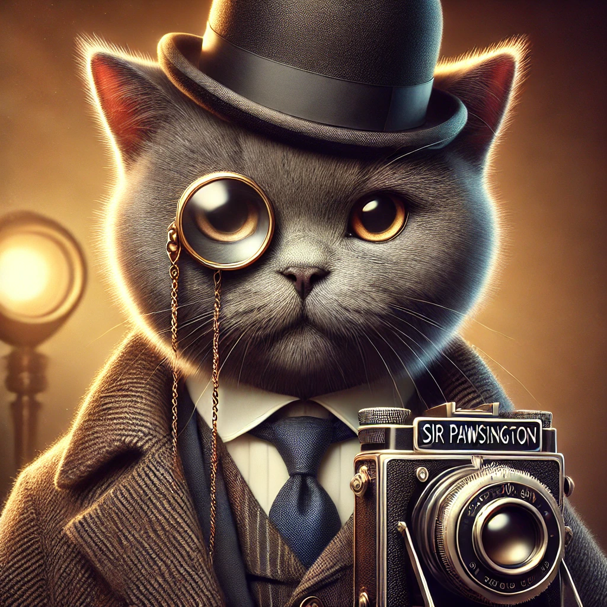
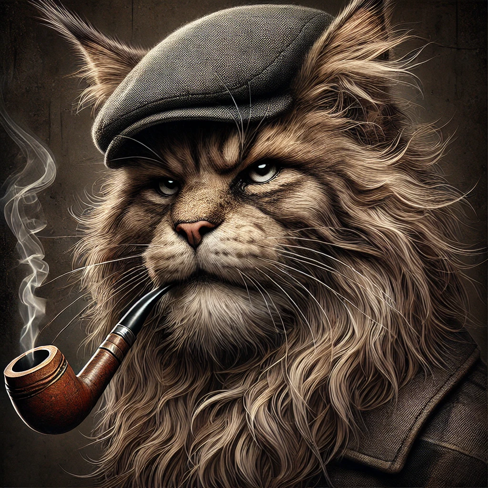
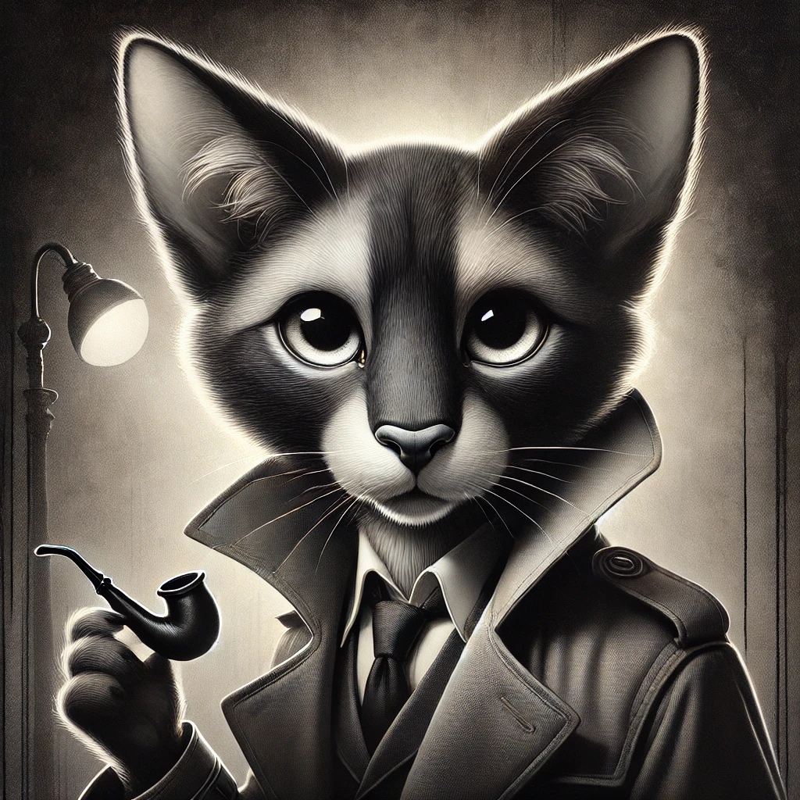

Read some of our reviews
The Lord of the Rings: The Fellowship of the Ring
Released: Dec 13, 2001
Genre: Fantasy, Adventure
Director: Peter Jackson
Writers: Philippa Boyens, Peter Jackson, J.R.R. Tolkien
Stars: Sean Astin, Sean Bean, Cate Blanchett...

A tale as timeless as the Shire itself! Jackson's adaptation of Tolkien’s magnum opus captures the essence of camaraderie and the weight of destiny. The cinematography is as sweeping as Middle-earth’s landscapes, and the performances, particularly by Sir Ian McKellen, are nothing short of masterful. A purr-fect balance of wonder and gravitas.

An epic adventure with swords, wizards, and creepy rings? Count me in! This flick is a visual feast, but let’s talk about the real MVP: Gollum’s dual-personality chaos. I can see why Frodo hesitates, though—carrying a cursed ring sounds worse than babysitting a litter of kittens!

A hauntingly beautiful exploration of power and sacrifice. The film’s ethereal glow mirrors the struggle of light against encroaching darkness. I was particularly entranced by the melancholic beauty of Rivendell. A masterstroke of cinematic artistry.